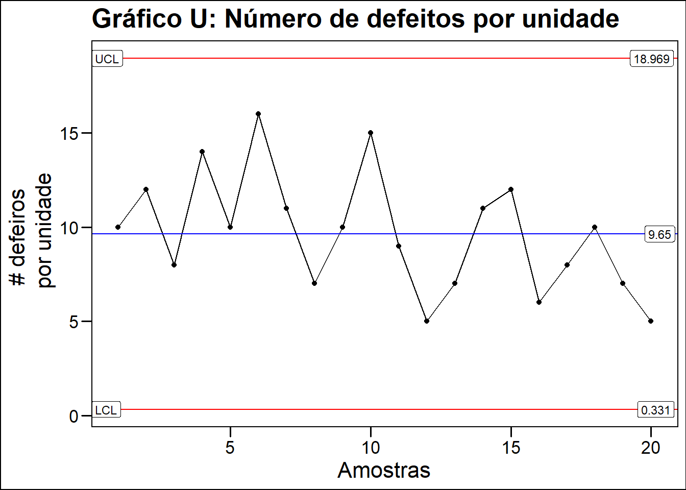
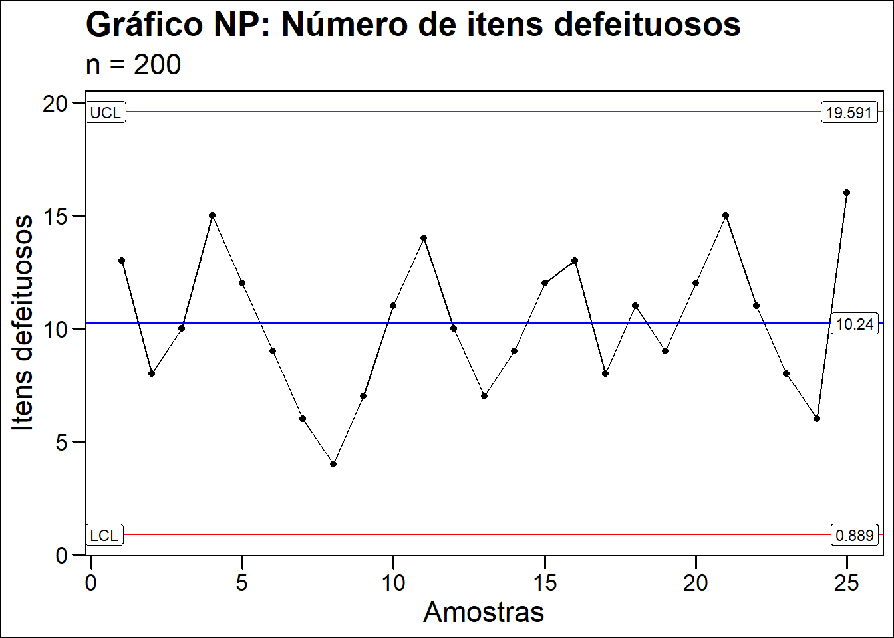

O gráfico de controle é uma ferramenta útil para avaliar o comportamento de um processo e também fornecer bases para previsões de comportamentos futuros.
O gráfico mostra algumas características fundamentais que descrevem um processo como:
Centralização que é determinada pela média.
Dispersão, que representa o desvio-padrão ou amplitude. O quanto os pontos de dados estão distantes da média.
Limites de controle (LC) que sinalizam se o processo está sob controle ou fora de controle.
Imagine uma linha de produção de alimentos (tomates cortados em rodelas) onde o objetivo é produzir uniformemente todas as rodelas de tomates, ou seja na mesma espessura e no mesmo tempo. O gráfico de controle ajuda avaliar se o processo está uniforme e sob controle estatístico, se possui variações e quais são essas variações. Eu insiro os dados de tempo médio gasto para fatiar tomates com a mesma espessura em em gráfico de controle.
Pego uma amostra de 100 tomates.
Registro o tempo gasto para fatiar cada tomate.
O tempo médio gasto para fatiar cada tomate será representada pela linha central \(\bar{x}\) enquanto o limite superior e inferior de controle terão três desvios padrão dessa média representados pela equação matemática \(\pm3\sigma\). Qualquer variação aleatória dentro desses limites, eu considero que o processo está normal ou sob controle.
Agora imagine que a partir do 10º tomate o gráfico apresente um padrão onde o tempo começa a aumentar sistematicamente até sair dos limites de controle.
Ao avaliar, percebi que a faca foi perdendo o fio necessitando de mais movimentos para romper a pele do tomate. Como efeito desse fenomeno, mais tempo foi gasto, o risco das fatias terem dimensões diferentes aumentaram e os padrões de qualidade do produto e do processo foram impactadas. As informações sobre padrões e variações podem ser vistas em um gráfico de controle.
Figura - Gráfico de controle
E por que +/- 3 desvios padrão da média?
A resposta é que considerando a distribuição normal de probabilidades, 99.7% dos dados estão variando em até 3 desvios padrão da média. Neste caso, qualquer variação dentro desses limites é considerando dentro do normal. Um valor comum de três desvios padrão pode ser justificado pelos bons resultados obtidos na prática, com o nível de confiança estabelecido de 99,74% na análise dos dados Brassard (1991)
Informações apresentadas no gráfico
Deming, Cahill, and Allan (2018), descrevem que Shewhart em 1924, descobriu duas formas de variações em um processo as quais ele classificou como causas comuns e causas especiais.
Como os processos sujeitos a variação de causas especiais eram imprevisíveis, as técnicas de probabilidade não poderiam ser usadas para separar um tipo de variação de outra e por isso, Shewhart criou um gráfico de controle estatístico como uma heurística para distinguir esses dois tipos de variação, pois cada tipo, requer tratamentos diferentes.
Variações por causas comuns ou aleatórias.
Fenômenos constantemente observados, variabilidade natural do processo.
As variações são previsíveis e quantificáveis e a variabilidade se mantem em uma faixa estável e que neste caso dizemos que o processo está sob controle estatístico.
Falta significância nos valores individuais seja pra cima ou pra abaixo da média.
Exemplos(processos em que há falta de manutenção de maquinas, inexistência de procedimento operacional padrão ou inadequados, materias primas de qualidade ruim, iluminação ruim, sujeira ou ruídos excessivos, problemas no design entre outros).
Variações por causas especiais ou assinaláveis.
Fenômenos imprevistos, emergentes ou anteriomente negligenciados.
Faz com que o processo se comporte de um modo completamente diferente do usual.
Variação fora da faixa registrada nos dados históricos deslocando o nível de qualidade.
Presença de significância que evidencia alguma mudança ou percepção no sistema.
Exemplos (Pane no servidor, falta de operador da maquina, quebra da maquina, lote diferente na matéria prima, falta ou oscilações na energia eletrica, controladores defeituosos)
Pode ser corrigida alterando o componente ou processo.
Nota sobre os limites de controle
Em algumas situações particulares, os limites de controle poderão ser ajustados, por exemplo, aumentar o limite para quando os custos de investigação das causas forem muito grandes e reduzir para quando as análises das possíveis causas do surgimento de fatores especiais de variação forem simples, consumirem o mínimo de tempo, e em situações em que o custo de produção de artigos defeituosos for alto Deming, Cahill, and Allan (2018).
Tipos de gráficos de controle
Para que o gráfico consiga capturar e mostrar informações relevantes e precisas a respeito do processo, houve a necessidade de fazer adaptações nos gráficos de acordo com os dados disponíveis durante o processo de fabricação. A figura abaixo auxilia na escolha do gráfico mais adequados para cada tipo de situação e dados disponíveis.
D3, D4 e E3 são constantes para gráfico de controle. A tabela estará no apêndice do livro e geralmente os softwares estatísticos já possuem os valores da tabela em seus cálculos.
Gráfico de controle de variável contínua
É formado por dados quantitativos que são aqueles que se movem lentamente em uma direção tais como comprimento(12,3 cm), largura(10,2 mm), peso(12,7 kgs), tempo (2,9 horas) entre outras.
O mais comum é o Xbarra-R que significa média e amplitude das amostras de cada subgrupo. Imagine 100 observações onde dividimos em 20 subgrupos com 5 medições em cada um. Em seguida fazemos a média de cada sub-grupo e plotamos a média de cada sub-grupo no gráfico. Vieira, S (1992)
Gráfico de controle de variável discreta ou gráfico de atributos
É formado por dados qualitativos que são contáveis e se movem em saltos. Por exemplo número de defeitos, número de defeitos em um item(e.g. 12 furos no tecido, 8 riscos em uma superfície metálica), número de itens defeituosos em uma placa eletronica, proporção de defeitos em conjunto de peças entre outros.
Para esse tipo de controle é comumente utilizado o gráfico C, U, NP, P.
Os gráficos de controle por atributos são utilizados geralmente quando a medição da característica é inviável, antieconômica ou há conveniência em transformar uma variável em atributo; no entanto, é importante acrescentar que uma variável contínua transmite mais informação do que variáveis discreta/atributos Brassard (1991)
A tabela abaixo mostra as subdivisões dos gráficos de controle
Tipos de gráficos de controle
Tipo de valor
Nome do gráfico
Contínuo
Gráfico \(x\) ou \(I-MR\) gráfico de valor individual
Contínuo
Gráfico \(\bar{x}\) - \(R\) ou gráfico média e amplitude c/ subgrupo 2-10
Contínuo
Gráfico \(\bar{x}\) - \(S\) ou gráfico média e amplitude c/ subgrupo >10
Discreto
Gráfico \(c\) ou gráfico de número de defeitos
Discreto
Gráfico \(u\) ou gráfico de número de defeitos por unidade
Discreto
Gráfico \(np\) ou gráfico de número de defeitos
Discreto
Gráfico \(p\) ou gráfico de fração defeituosa
Atenção
A linha inferior de controle não pode ser menor que zero.
Qual o objetivo
Fornecer para o gestor informações sobre o comportamento do processo.
Facilitar a realização de análises, ações ou ajustes nos casos em que os processos apresentarem comportamentos considerados fora do padrão normal aleatório.
Figura - Gráfico de controle
De onde vem
Necessidade de monitoramento e avaliação de um processo. De acordo com Deming, Cahill, and Allan (2018), não se melhora a qualidade através da inspeção pois o defeito já vem com o produto quando ele deixa a maquina antes de inspecioná-lo. É importante avaliar o defeito no momento em que ele está acontecendo ou está prestes a acontecer, nisso o gráfico de controle pode ser uma ferramenta útil.
Necessidade de ferramenta versátil, que possibilite visualizar e identificar vários tipos de comportamentos como pontos fora do controle, formação de tendências ou padrões repetidos.
Verificar resultados parciais as ações em andamento e checar resultados.
Figura - Etapa 6 e 7 do PDCA: Verificar indicadores direcionadores e de resultado
Como fazer
Definir qual tipo de dado disponível ou que pretende utilizar para avaliar o processo, se é um dado contínuo ou um dado discreto.
Com base no tipo de dado disponível, escolher o gráfico adequado e inserir os dados.
No R os gráficos de controle podem ser feitos usando os pacotes qcc e ggQC
Gráfico XmR : Sub-grupo é 1 ou seja, valor individual.
O gráfico XmR também conhecido como I-MR ou gráfico de controle de Shewhart, mostra a variação de processo onde cada ponto é uma obervação de dados contínuos(numéricos), diferentemente do Xbar onde cada ponto, representa uma média dos elementos do sub-grupo.
O gráfico de controle XmR geralmente é usado para monitorar estabilidade do processo durante correções ou ajuste no processo, determinar se um processo está pronto para ser melhorado e também fornecer informações sobre os efeitos da melhoria através da visualização dos dados.
Como exemplos práticos de uso, podemos citar o controle de temperatura de cada peça, processos biológicos, orçamentos e vendas mensais, reclamações de clientes, inventário, reações quimicas entre outros.
Alguns exemplos abaixo serão feitos usando o R (software livre para computação científica e data science) onde será necessário carregar os pacotes tidyverse, ggQC, patchwork, ggthemes e flextable
Uma fábrica de produto quimico quer avaliar o processo de produção para garantir a qualidade do produto. O teor de pureza de 85% é uma característica de qualidade de interesse e é especificado pelo consumidor. O produto é feito em batelada em um reator(imagine uma panela de pressão com sopa, onde qualquer região que você coletar a amostra, terá a mesma característica de qualidade) e portanto, teremos uma amostra por dia com apenas um subgrupo em 24 dias trabalhados totalizando 24 amostras.
Gráfico XbarR: Para este gráfico o número de subgrupos vão de 2 e 10.
Numa fábrica de auto peças, a característica de qualidade de interessse é o diametro primitivo usinado da rosca feita em uma maquina CNC (torno computadorizado). Para avaliar o processo, foram utilizadas 25 amostras com 5 medições cada(5 subgrupos) do diâmetro das peças em milímetros. Como se trata de uma variável contínua ou seja, uma medida(mm), será usado o gráfico Xbar-R conhecido como gráfico de controle por médias(Xbar) e amplitude(R ou range).
#using ggQC plot xbarplot_xbar <- data_xbar %>%pivot_longer(cols =- sub_group,names_to ="sample",values_to ="value") %>%ggplot(aes(x = sub_group, y= value, group =1))+stat_summary(fun = mean, geom ="point")+stat_summary(fun = mean, geom ="line")+stat_QC(method ="xBar.rBar",auto.label =TRUE,label.digits =3)+ ggthemes::theme_base()+labs(title ="Gráfico Xbar de médias dos subgrupos",x ="Amostras",y ="Média")#using ggQC plot rangeplot_range <- data_xbar %>%pivot_longer(cols =- sub_group,names_to ="sample",values_to ="value") %>%ggplot(aes(x = sub_group, y= value, group =1 ))+stat_summary(fun = QCrange, geom ="point")+stat_summary(fun = QCrange, geom ="line")+stat_QC(method ="rBar",auto.label =TRUE,label.digits =3)+ ggthemes::theme_base()+labs(title ="Gráfico de amplitude",x ="Amostras",y ="Amplitude média")#using ggQC plot two charts at the same timeplot_xbar / plot_range
Gráfico XbarS onde o valor do subgrupo é maior que 10
Numa fábrica de auto peças, a característica de qualidade de interessse é o diametro primitivo usinado da rosca feita em uma maquina CNC (torno computadorizado). Para avaliar o processo, foram utilizadas 25 amostras com 5 medições cada(5 subgrupos) do diâmetro das peças em milímetros.
Como se trata de uma variável contínua ou seja, uma medida(mm), será usado o gráfico Xbar-S conhecido como gráfico de controle por médias(Xbar) e desvio padrão (S ou standard deviation).
Em uma fábrica de circuito impresso, o engenheiro deseja avaliar a estabilidade do processo com o objetivo de melhorar a qualidade do produto. Para isso, foram registrados o número de defeitos observados em 26 amostras sucessivas com 100 placas de circuito impresso em cada amostra. Como o número de defeitos é uma variável discreta(se move em saltos), o engenheiro optou por usar o gráfico de controle tipo c.
#plot c chartdata_c %>%ggplot(aes(x = sub_group, y = num_defective_units))+geom_point()+geom_line()+stat_QC(method ="c",auto.label =TRUE,label.digits =2)+ ggthemes::theme_base()+labs(title ="Gráfico C: Número de defeitos",x ="Amostras",y ="Número de defeitos")
Gráfico\(u\)ou gráfico de número de defeitos por unidade
Com objetivo de melhorar a excelencia operacional, um fabricante de computadores optou por usar um gráfico de controle para não conformidades por unidade em uma linha de montagem final para monitorar e avaliar o processo de produção. Uma amostra foi coletada em cada um dos 20 dias úteis de produção coletando-se 5 unidades por amostra.
data_u %>%ggplot(aes(x = sample_number , y = num_nonconformities ,n = sample_size))+geom_point()+geom_line()+stat_QC(method ="c",auto.label =TRUE,label.digits =3)+ ggthemes::theme_base()+labs(title ="Gráfico U: Número de defeitos por unidade",x ="Amostras",y ="# defeiros \n por unidade")

Gráfico\(np\)ou gráfico de número de defeitos
Uma fábrica de sapatos quer avaliar a estabilidade do processo e melhorar a qualidade do produto. Durante 25 dias úteis de produção foi coletado uma amostra por dia com 200 pares de sapato cada amostra e registrado o número de unidades com defeitos. nessas amostras. Como o tipo de dado é uma variável binomial (tem defeito ou não tem defeito) optou-se por utilizar o gráfico np para avaliar o processo.
data_np %>%ggplot(aes(x =sub_group, y = num_defective_units))+geom_point()+geom_line()+stat_QC(method ="np",n =200, #lembrar de alterar auto.label =TRUE,label.digits =3)+labs(title ="Gráfico NP: Número de itens defeituosos",subtitle ="n = 200",x ="Amostras",y ="Itens defeituosos")+ ggthemes::theme_base()

Gráfico\(p\)ou gráfico de fração defeituosa
Uma fábrica de baterias resolve avaliar a estabilidade de um processo usando gráficos de controle. Devido a características técnicas do processo o tamanho do subgrupo é variável partindo de 80 até 120 unidades por amotra sendo o número de defeitos por unidade o que deseja-se avaliar. Como o tipo de dado é uma variável discreta, optou-se por usar o gráfico p analisando os dados de 25 dias úteis de trabalho na fábrica.
Após o monitoramento e avaliação das ações, a próxima etapa é a padronização para que o procedimento possa ser replicado para os demais processos semelhantes.
Qual o resultado
Melhoria na avaliação das ações que estão sendo executadas através da identificação de comportamento do processo.
Melhoria do equilibrio no ambiente e do trabalho da equipe pois permite tomar ações preventivas e preditivas minimizando as pressões e stress durante a solução de um problema.
Melhoria da qualidade e sustentabilidade nas relações no longo prazo. Por exemplo um produto uniforme terá menos defeitos, com menos defeitos durará mais, durando mais o consumidor fica satisfeito, o consumidor ficando satisfeito ele recomenda o produto e novos consumidores comparão o produto.
Referências
Brassard, Michael. 1991. Qualidade. Ferramentas Para Uma Melhoria Contínua. 1ª edição. QualityMark.
Deming, W. Edwards, Kevin Edwards Cahill, and Kelly L. Allan. 2018. Out of the Crisis, Reissue. Reissue ed. edição. Cambridge, Massachsetts: MIT Press.
Vieira, S, Wada,R. 1992. As 7 Ferramentas Estatísticas para o Controle da Qualidade - Sonia Vieira / Ronaldo Wada. Vol. vol1. Qa&t.

 D3, D4 e E3 são constantes para gráfico de controle. A tabela estará no apêndice do livro e geralmente os softwares estatísticos já possuem os valores da tabela em seus cálculos.
D3, D4 e E3 são constantes para gráfico de controle. A tabela estará no apêndice do livro e geralmente os softwares estatísticos já possuem os valores da tabela em seus cálculos.